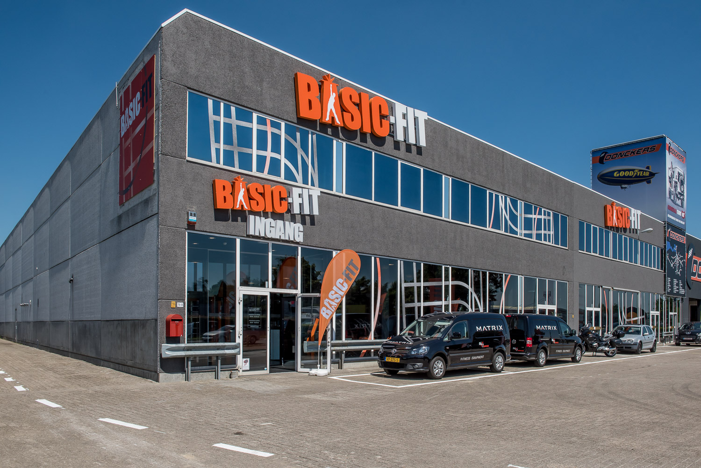
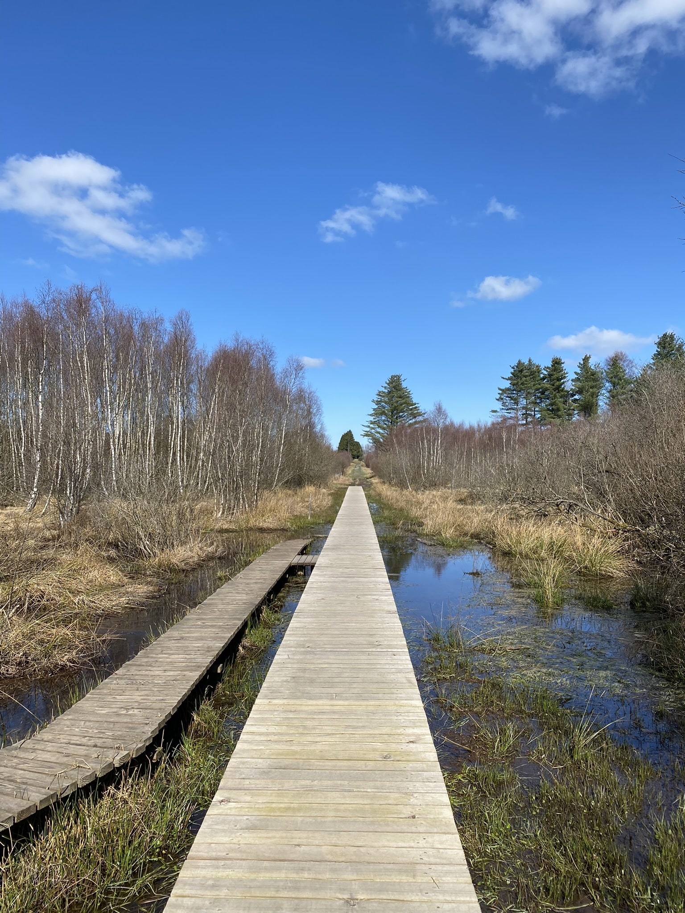

Fitness
In mijn vrije tijd ga ik af en toe naar de fitness. Mijn goal is niet om een strak gespierd lichaam te krijgen. maar ik zorg er gewoon voor doormiddel van af en toe te fitnessen dat ik kan genieten van het leven en dat mijn gewicht rond hetzelfde punt blijft waardoor ik gezond kan blijven leven.
Wandelen
Dagelijks ga ik savonds ook nog vaak wandelen. Omdat ik vaak achter een bureau zit krijg ik anders zo goed als geen beweging dus daarom ga ik elke avond een redelijke wandeling doen van een aantal uur.
Gamen
In mijn vrije tijd game ik ook veel. Hierdoor heb ik de intresse ontdenkt om meer teweten te komen over programmeren en hoe alles in elkaar zit en gemaakt word.
Vijver onderhouden
In mijn vrije tijd onderhoud ik de vijver van mijn opa. Hier doe ik het gras af en hakken we bomen om zodat het een rustgevende omgeving is voor mijn oma en de rest van mijn famillie. Samen met mijn opa doe ik hier onderhoud aan deze vijver en ben ik elke week er toch wel een aantal uren bezig. Ik ben hier ook al een aantal jaar mee bezig met mijn opa waardoor ik een goede band heb gevormt door samen aan dingen te werken.